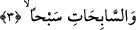

Peygamberimiz (s.a.) ise ona: “Bugünden sonra babana hiçbir sıkıntı yoktur”
buyurmuştur.[1] Şimdi soru şudur: Ruhun kabzedilmesi meselesi Peygamber Efendimiz
(s.a.) açısından bile bu kadar zor olduğuna göre bu âyette zikredilen yumuşaklık ve
hoşluk acaba nasıl açıklanacaktır?
Bu soruya şöyle cevap verilmiştir: Peygamber Efendimiz’in şerefli mizacı bütün
mizacların içinde en mutedil olanı idi. Peygamber Efendimiz (s.a.) bundan dolayı elemi
ve sıkıntıyı başkasından daha fazla hissetmiştir. Çünkü bir söz vardır. Hafif bile çok
hafif olana ağır gelir. Öte yandan Allah Teâlâ Peygamber Efendimizi -ölümü ümmetine
kolay kılsın diye duâ etmesi için- imtihan etmiş olabilir. Bir başka ihtimal ise şudur:
Rivâyet olunduğuna göre Peygamberimiz (s.a.) Allah’tan ümmetine kolaylık olsun diye
ölümün bazı sıkıntılarını kendine yüklemesini talep etmiştir.[2] Çünkü o müminlere çok
merhametli ve çok şefkatli idi. Bir başka husus ise onun ümmetine bu olay vâsıtasıyla
tesellî vermektir. Şöylesine ki:
Peygamber Efendimiz’in ümmetinden herhangi bir kimsenin başına ölüm esnâsında
böyle bir sıkıntı geldiğinde Peygamberini hatırlamalı ve teselli bulmalıdır. Bir başka
husus ise şudur: Gerek Peygamber Efendimiz’in âilesinden gerekse müslümanlardan
onun durumunu gören kimselerin, bir meşakkat ve sıkıntı ile karşılaştıklarında sabredip
sevaba ermeleri amaçlanmış olabilir. Nitekim ölüm esnasında bazı çocukların çekmiş
oldukları şiddetli sıkıntıları aynı bakış açısı ve gerekçeyle açıklamışlardır. Öte yandan
şöyle bir gerçek vardır. Kâmil insanların rahatları şiddet ve sıkıntıdadır. Çünkü onların
şiddet ve sıkıntıdaki rahatlıkları ilim ve derecelerde yükselmeleri kabilindendir.
Kemale ermemiş olanlar açısından ise günahlarının keffareti olarak değerlendirilir.
Hakikat ehli aslında şiddet ve sıkıntı nedir bilmezler. Çünkü onlar şühûd denizine
dalmışlardır. Onların çektikleri sıkıntı sâdece zâhirlerindedir. Kısacası ateş nasıl
dünyada dünya durdukça yok olmuyor. Sıkıntı da aynı şekilde bu dünya hayatında
zâhiren hiçbir zaman yok olmaz.
3. Yüzdükçe yüzenlere
Bu ifâde de atıf yoluyla başka bir yemindir. “es-Sâbihât” kelimesinin kökü olan
“sebh” su veya havada hızlı bir biçimde yol almak demektir. “Sebhan” kelimesi masdar
olup mef’ûl-i mutlak olarak mansubdur. Allah bu üçüncü âyette hızla yüzer gibi yol alan
melekler zümresi üzerine yemin etmektedir. Bu melekler gökten yere hızla inerler.
Bunlar yere inmelerindeki sürat ve hızları itibâriyle suda yüzen kimselere benzerler. Bu
ifâde tahsisten sonra ta’mim kabilindendir. Çünkü birinci ve ikinci âyette geçen
meleklerin yeryüzüne inmeleri sâdece ruhları almak gayesiyleydi (tahsis). Oysa bu
üçüncü âyetteki meleklerin inmeleri her türlü iş ve durum içindir (ta’mim).